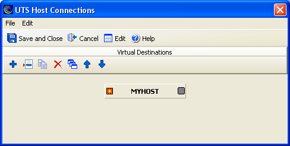

- From the BlueZone menu bar, click .
- Click Properties.
- Highlight an existing screen and click Edit
Screen. You can also create a new screen by clicking Add
Screen.
- Click Connections.
The first time you access this dialog, you receive the
following message: No connecting information exists.
Would you like an initial host destination generated now?
- Click Yes to generate a destination.
The T27 Host Connections dialog displays.
The work area has one group to configure virtual destinations.
The
following is an example of the T27 Host Connections dialog with the
default virtual destination named
MYHOST.
Figure 1. T27 Host Connections dialog
